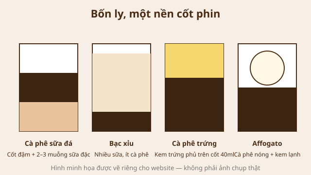

Cà phê sữa đá và 3 biến tấu: bạc xỉu, cà phê trứng, affogato
Tác giả: Ruler
Cà phê sữa đá là ly cà phê quen thuộc nhất với nhiều người Việt: cà phê phin chảy lên sữa đặc, khuấy đều rồi đổ vào ly đá. Từ nền đó, người ta tạo ra nhiều biến tấu khác nhau. Bạc xỉu đi theo hướng nhiều sữa, ít cà phê. Cà phê trứng đi theo hướng thêm một lớp kem trứng bông mịn lên trên. Affogato đi theo hướng ngược lại: cà phê nóng rót lên kem lạnh, uống ngay khi kem vừa tan.
Bài này viết cả bốn ly trong một bài, vì chúng dùng chung một nền là cốt cà phê phin, nhưng mỗi ly lại cần một cách pha và một cách uống khác nhau. Bạn chỉ cần học cách pha cốt phin một lần trong Bài 01 của website này, rồi dùng cốt đó làm điểm bắt đầu cho cả bốn ly dưới đây. Bài này không viết lại các bước pha phin, mà chỉ ghi lượng cốt cần dùng cho mỗi ly và những điểm khác biệt của từng biến tấu.

Hình minh họa tự vẽ — không phải ảnh chụp thật.
Cà phê sữa đá: ly nền để hiểu ba biến tấu còn lại
Cà phê sữa đá bắt đầu từ cốt cà phê phin. Bạn pha phin theo Bài 01, với 25g bột và 80ml nước làm điểm bắt đầu, rồi cho sữa đặc vào ly trước khi đặt phin lên. Lượng sữa đặc thường dùng là 2–3 muỗng canh cho một ly, theo hướng dẫn pha phin cho một ly trong nguồn tham khảo của bài này. Người thích đậm thì giảm sữa còn khoảng 1,5 muỗng; người thích ngọt thì tăng lên 3 muỗng. Không có lượng sữa đúng duy nhất, vì mỗi loại sữa đặc ngọt khác nhau và mỗi người cũng thích ngọt khác nhau.
Khi cà phê chảy hết, bạn khuấy đều cho sữa tan hết rồi đổ sang ly lớn đầy đá. Bạn nên khuấy trước khi đổ đá, vì sữa đặc tan chậm trong nước lạnh. Nếu bạn đổ đá trước rồi mới khuấy, sữa sẽ lắng xuống đáy và ly trên nhạt, ly dưới ngọt gắt. Một ly sữa đá đạt có màu nâu đều, vị đắng của cà phê vẫn rõ, vị ngọt của sữa không lấn át hoàn toàn, và đá tan chậm đủ để bạn uống hết ly mà vị không bị loãng quá nhanh.
Điểm cần nhớ là cà phê sữa đá dùng cốt đậm. Nếu bạn pha cốt loãng rồi cho thêm sữa và đá, ly sẽ nhạt rất nhanh khi đá tan. Vì vậy, các biến tấu dưới đây đều dùng cốt đậm hơn hoặc ít nước hơn so với ly uống đen. Bạn đừng pha một ấm cà phê loãng rồi dùng chung cho cả bốn ly, vì mỗi ly cần một độ đậm khác nhau.
Bạc xỉu: nhiều sữa, ít cà phê, uống nhẹ nhàng hơn
Bạc xỉu là ly nhiều sữa và ít cà phê. Tên gọi này được nhiều nguồn giải thích là bắt nguồn từ cách gọi của cộng đồng người Hoa ở Sài Gòn, chỉ một ly sữa có chút cà phê. Ngày nay, bạc xỉu thường là ly có màu nâu nhạt, vị ngọt béo, mùi cà phê chỉ thoảng qua, rất hợp với người không chịu được vị đắng đậm của cà phê sữa đá.
Sự khác nhau giữa bạc xỉu và cà phê sữa đá không nằm ở nguyên liệu, mà nằm ở tỉ lệ. Một hướng dẫn pha bằng phin ghi cách làm cụ thể: cho 2 muỗng canh sữa đặc và 50ml sữa tươi vào ly, pha phin với 15g bột và khoảng 50ml nước, khuấy đều rồi thêm đá. Nếu pha bằng máy espresso thay vì phin, một hướng dẫn khác dùng 16–18g bột, 20g sữa đặc và 80ml sữa tươi, lấy 36–40ml cà phê. Hai cách ghi này khác nhau vì cách pha khác nhau, không phải vì một bên ghi sai: bạn pha bằng phin thì dùng lượng phin, pha bằng máy thì dùng lượng máy.
Khi pha bạc xỉu bằng phin tại nhà, bạn nên pha một phin nhỏ riêng với ít bột hơn, thay vì lấy một phần cốt từ phin lớn rồi pha loãng. Pha riêng giúp bạn lấy được phần cà phê đầu đậm nhất, và ly bạc xỉu vẫn có hậu vị cà phê rõ, không bị sữa lấn át hoàn toàn. Bạn cũng có thể đánh bọt sữa tươi rồi phủ lên trên, nhưng bước này không bắt buộc. Nếu bạn thích uống nóng, bạn có thể dùng sữa tươi ấm thay vì đá, và ly bạc xỉu nóng sẽ có vị béo rõ hơn.
Người mới thường nhầm bạc xỉu với cà phê sữa đá pha loãng. Hai ly này khác nhau ở chỗ: cà phê sữa đá pha loãng là ly sữa đá bị nhạt đi vì nhiều nước hoặc nhiều đá, còn bạc xỉu là ly được pha chủ đích với nhiều sữa ngay từ đầu, vị ngọt béo là vị chính, vị cà phê chỉ là vị nền. Nếu bạn pha bạc xỉu mà vẫn thấy đắng đậm như cà phê sữa đá, hãy giảm lượng bột phin xuống hoặc tăng sữa tươi lên, thay vì thêm đường.
Cà phê trứng: lớp kem trứng bông mịn trên cà phê đen đặc
Cà phê trứng là món gắn liền với Hà Nội. Theo Coffee Studies, cà phê trứng ra đời vào năm 1946, khi ông Nguyễn Văn Giảng, một người pha chế từng làm việc tại khách sạn Metropole Hà Nội, sáng tạo ra món này trong thời kỳ sữa tươi khan hiếm. Ông dùng lòng đỏ trứng gà đánh bông để thay cho sữa tươi, kết hợp với cà phê đen đậm đặc. Quán Cà phê Giảng sau đó trở thành nơi gắn liền với món này, và gia đình ông vẫn tiếp tục bán món này cho tới nay.
Ly cà phê trứng đạt có hai lớp rõ ràng: bên dưới là cà phê đen đặc, bên trên là lớp kem trứng bông mịn, màu vàng ngà, múc bằng thìa thấy kem giữ được hình, không tanh. Lớp kem này không phải là bọt sữa. Nó được làm từ lòng đỏ trứng đánh bông cùng sữa đặc và đường, cho tới khi hỗn hợp sánh, nhạt màu và rơi chậm thành dải khi nhấc que đánh lên.
Cách pha tại nhà, theo hướng dẫn pha bằng phin trong nguồn tham khảo, gồm bốn bước. Bước đầu tiên là pha phin khoảng 40ml cà phê đen thật đặc và giữ nóng. Bước thứ hai là tách 1 lòng đỏ trứng gà tươi, bỏ hết lòng trắng và màng, cho vào bát cùng 1 muỗng canh sữa đặc và 1 muỗng cà phê đường. Bước thứ ba là đánh bằng máy đánh trứng cầm tay khoảng 3–5 phút, đến khi hỗn hợp bông, sệt và chuyển sang màu vàng ngà. Một hướng dẫn khác dùng 2 lòng đỏ trứng với 2 muỗng canh sữa đặc, đánh 3–5 phút cho tới khi hỗn hợp tăng gấp đôi hoặc gấp ba thể tích, bóng và đủ đặc để giữ hình trong 2–3 giây. Sự khác nhau về số lòng đỏ đến từ cỡ ly và độ dày lớp kem bạn muốn, không phải vì một bên ghi sai. Bước cuối cùng là rót cà phê nóng vào ly, rồi múc lớp kem trứng phủ lên trên, uống ngay khi còn nóng.
Có hai lưu ý an toàn cần nói rõ. Thứ nhất, cà phê trứng dùng lòng đỏ trứng chưa qua nấu chín, chỉ được đánh bông rồi rót cà phê nóng lên trên. Bạn cần dùng trứng tươi, sạch, còn hạn sử dụng, và bảo quản lạnh đúng cách trước khi dùng. Coffee Studies lưu ý rõ: vi khuẩn Salmonella có thể nằm trong lòng đỏ của quả trứng còn nguyên vẹn, không chỉ ở vỏ, nên trứng tươi thường không loại bỏ được rủi ro; nếu mua được trứng tiệt trùng (pasteurised) thì nên dùng loại đó, vì trứng tiệt trùng vẫn đánh bông được như thường. Thứ hai, người cần thận trọng với thực phẩm chưa nấu chín, ví dụ người có hệ miễn dịch yếu hoặc phụ nữ mang thai, nên cân nhắc trước khi dùng món này, hoặc hỏi ý kiến người có chuyên môn. Bài này không đưa ra lời khuyên sức khỏe cho từng người, mà chỉ nêu lưu ý chung để bạn tự quyết định.
Khi uống, bạn có thể dùng thìa múc một ít kem trứng cùng cà phê bên dưới, hoặc uống trực tiếp qua lớp kem để cảm nhận vị béo trước rồi mới tới vị đắng của cà phê. Nhiều quán phục vụ cà phê trứng trong tách sứ đặt trong một bát nước nóng, để ly giữ nóng lâu hơn. Tại nhà, bạn có thể đặt ly vào một bát nước nóng trong lúc pha, rồi lấy ra khi uống. Nếu lớp kem bị tanh, nguyên nhân thường gặp là trứng không tươi, hoặc bạn đánh chưa đủ bông, hoặc cà phê bên dưới không đủ nóng. Bạn nên đánh lại với trứng mới và pha cà phê đặc hơn, thay vì thêm đường để lấn mùi tanh.
Affogato: cà phê nóng rót lên kem lạnh, uống ngay
Affogato là món có nguồn gốc từ Ý. Tên gọi này trong tiếng Ý có nghĩa là đắm chìm, chỉ viên kem bị cà phê nóng rót lên và chìm dần trong ly. Món này đơn giản hơn cà phê trứng rất nhiều, vì bạn không cần đánh bông gì cả. Bạn chỉ cần một phần cà phê thật đặc và 1–2 viên kem vani.
Cách làm affogato theo hướng dẫn dùng máy pha cà phê là chiết xuất espresso từ 16–18g bột, lấy khoảng 60ml rồi rót 35–40ml lên 1–2 viên kem. Rang Xay có dặn nên đợi espresso nguội bớt rồi mới rót lên kem, vì espresso còn nóng làm kem tan nhanh. Nhưng theo định nghĩa chung của món này (Coffee Studies), affogato là espresso nóng vừa chiết rót trực tiếp lên kem lạnh và uống ngay, vì cảm giác tương phản nóng–lạnh là điểm chính của món. Bạn có thể chọn một trong hai cách: rót ngay khi còn nóng để giữ đúng cảm giác tương phản, hoặc đợi nguội bớt theo Rang Xay để kem tan chậm hơn. Tại nhà không có máy espresso, bạn có thể dùng cốt phin thật đặc thay cho espresso, với lượng bột và nước theo Bài 01 nhưng pha đậm hơn, ví dụ dùng 25g bột với ít nước hơn và lấy phần cốt đầu. Cách dùng cốt phin thay espresso là gợi ý thay thế của bài viết này, không phải công thức của nguồn đã dẫn, vì nguồn dùng máy espresso.
Bạn nên dùng ly thủy tinh nhỏ, có thành dày, đã làm lạnh trước trong ngăn mát tủ lạnh. Cho 1–2 viên kem vani vào ly, rót cà phê lên trên, rắc một chút bột cacao nếu thích, rồi uống ngay. Rót khi cà phê còn nóng thì uống liền trong vài phút, vì kem tan nhanh; đợi cà phê nguội bớt theo cách Rang Xay dặn thì kem tan chậm hơn, nhưng ly mất đi một phần cảm giác tương phản nóng–lạnh. Nếu bạn chờ lâu, kem tan hết và ly trở thành cà phê sữa lạnh, mất đi cảm giác tương phản giữa nóng và lạnh, giữa đắng và ngọt. Affogato không phải là món để pha trước rồi để dành. Nó là món uống ngay trong vài phút sau khi rót.
Affogato khác cà phê trứng ở chỗ: cà phê trứng có lớp kem trứng ấm, bông mịn, uống chậm; affogato có lớp kem lạnh, tan dần, uống nhanh. Affogato cũng khác bạc xỉu ở chỗ: bạc xỉu là sữa nhiều và cà phê ít, uống nhẹ nhàng; affogato là cà phê đặc và kem lạnh, vị đắng và vị ngọt đối nhau rõ ràng trong cùng một ngụm.
Bảng chọn ly theo khẩu vị và thời điểm
Bảng dưới đây do chúng tôi tự tổng hợp để bạn chọn nhanh, dựa trên sự khác nhau về tỉ lệ và cách uống đã viết ở trên. Bảng này không thay thế việc nếm thử, mà chỉ giúp bạn bắt đầu từ ly gần với gu của mình nhất.
| Bạn muốn | Chọn ly nào | Vì sao |
|---|---|---|
| Đậm, đắng rõ, uống với đá buổi sáng | Cà phê sữa đá | Cốt phin đậm, sữa đặc vừa đủ, đá làm ly mát và dễ uống |
| Ngọt béo, ít đắng, uống nhẹ nhàng | Bạc xỉu | Nhiều sữa, ít cà phê, vị cà phê chỉ thoảng qua |
| Ấm, béo, bông mịn, uống chậm | Cà phê trứng | Lớp kem trứng đánh bông phủ trên cà phê đen đặc, giữ nóng lâu |
| Đắng và ngọt đối nhau, uống ngay | Affogato | Cà phê nóng đặc rót lên kem vani lạnh, kem tan dần trong ly |
| Thử cả bốn ly trong một buổi | Pha từng ly riêng theo lượng riêng | Bạc xỉu pha phin riêng 15g/50ml, cà phê trứng pha cốt 40ml riêng; sữa đá và affogato có thể chia chung cốt phin đậm |
Nếu bạn muốn thử cả bốn ly trong một buổi, hãy pha cốt phin đậm trước rồi chia ra cho sữa đá và affogato, vì hai ly này dùng chung được cốt đậm. Bạc xỉu thì pha phin riêng với 15g bột và 50ml nước, lấy phần cà phê đầu đậm nhất; cà phê trứng thì pha cốt 40ml riêng, vì hai ly này cần độ đậm và nhiệt độ khác với cốt chia chung. Cách này giúp bạn so sánh bốn ly trong cùng một buổi mà không tốn nhiều thời gian, và bạn sẽ thấy rõ sự khác nhau giữa các ly đến từ sữa, trứng và kem, không phải chỉ từ cốt cà phê.
Lỗi thường gặp khi pha bốn ly này
Lỗi đầu tiên là dùng chung một độ đậm cho cả bốn ly. Cà phê sữa đá cần cốt đậm, bạc xỉu cần cốt ít hơn nhưng vẫn đậm, cà phê trứng cần cốt thật đặc và nóng, affogato cần cốt đặc nhất. Nếu bạn dùng cùng một cốt loãng cho cả bốn ly, bạc xỉu sẽ nhạt, cà phê trứng sẽ tanh vì cà phê không đủ nóng và đậm, affogato sẽ thành cà phê sữa lạnh.
Lỗi thứ hai là khuấy sai thời điểm. Với cà phê sữa đá và bạc xỉu, bạn khuấy sữa trước khi cho đá. Với cà phê trứng, bạn không khuấy lớp kem vào cà phê trước khi uống, mà để hai lớp riêng rồi múc cùng nhau. Với affogato, bạn không khuấy kem tan hết trước khi uống, mà uống ngay khi kem vừa bắt đầu tan.
Lỗi thứ ba là pha trước quá lâu. Cà phê trứng và affogato đều cần uống ngay. Cà phê sữa đá và bạc xỉu có thể chờ đá tan một chút, nhưng nếu bạn pha trước nửa giờ rồi mới uống, đá tan hết và ly sẽ loãng. Hãy pha khi bạn đã sẵn sàng ngồi xuống uống, không pha trước rồi để đó.
Kết luận
Cà phê sữa đá, bạc xỉu, cà phê trứng và affogato đều bắt đầu từ cốt cà phê phin, nhưng mỗi ly lại đi theo một hướng khác nhau: sữa đá đi theo hướng đậm và mát, bạc xỉu đi theo hướng ngọt béo và nhẹ, cà phê trứng đi theo hướng ấm và bông mịn, affogato đi theo hướng nóng và lạnh đối nhau. Bạn không cần học bốn công thức riêng biệt. Bạn chỉ cần pha cốt phin đậm làm nền, rồi thay đổi lượng sữa, cách đánh trứng và cách dùng kem cho từng ly — riêng bạc xỉu pha phin riêng 15g bột với 50ml nước, và cà phê trứng pha cốt 40ml riêng, vì hai ly này cần độ đậm và nhiệt độ khác với cốt chia chung. Sau một buổi thử cả bốn ly, bạn sẽ biết mình thích ly nào nhất, và ly đó sẽ trở thành ly quen thuộc của bạn mỗi sáng.
Nguồn tham khảo
- TTVNN, "Cà phê Việt: pha phin, cà phê sữa đá, bạc xỉu, cà phê trứng Hà Nội và cà phê muối Huế" — cà phê sữa đá dùng 2–3 muỗng canh sữa đặc cho một ly; bạc xỉu dùng 2 muỗng canh sữa đặc và 50ml sữa tươi, pha phin với 15g bột và khoảng 50ml nước; cà phê trứng pha phin khoảng 40ml cà phê đặc, đánh 1 lòng đỏ với 1 muỗng canh sữa đặc và 1 muỗng cà phê đường trong 3–5 phút (truy cập 23/11/2026): https://ttvnn.com/ca-phe-viet-pha-phin-ca-phe-trung-ca-phe-muoi/
- Coffee Studies, "Vietnamese Egg Coffee: The Hanoi Original" — cà phê trứng ra đời năm 1946 tại Hà Nội, do Nguyễn Văn Giảng sáng tạo khi sữa tươi khan hiếm; lớp kem làm từ lòng đỏ trứng và sữa đặc, đánh 3–5 phút cho tới khi bông, nhạt màu và giữ hình (truy cập 23/11/2026): https://coffeestudies.com/espresso-drinks/vietnamese-egg-coffee
- Phin Việt (Rang Xay Cafe), "Công Thức Pha Cà Phê Sữa Bằng Máy" — bạc xỉu dùng 16–18g bột, 20g sữa đặc, 80ml sữa tươi, lấy 36–40ml cà phê; cà phê trứng dùng 2 lòng đỏ, đánh 5–10 phút; affogato dùng 16–18g bột và 1–2 viên kem, chiết khoảng 60ml, rót 35–40ml, Rang Xay dặn đợi espresso nguội bớt rồi mới rót lên kem (truy cập 23/11/2026): https://rangxaycafe.com/cong-thuc-pha-ca-phe-sua-bang-may.html
- Coffee Studies, "Affogato: Espresso Poured Over Ice Cream" — affogato là một viên kem (hoặc hai viên) với một shot espresso nóng vừa chiết rót trực tiếp lên trên, uống ngay bằng thìa; espresso phải nóng và tươi, chiết xong rót liền (truy cập 23/11/2026): https://coffeestudies.com/espresso-drinks/affogato